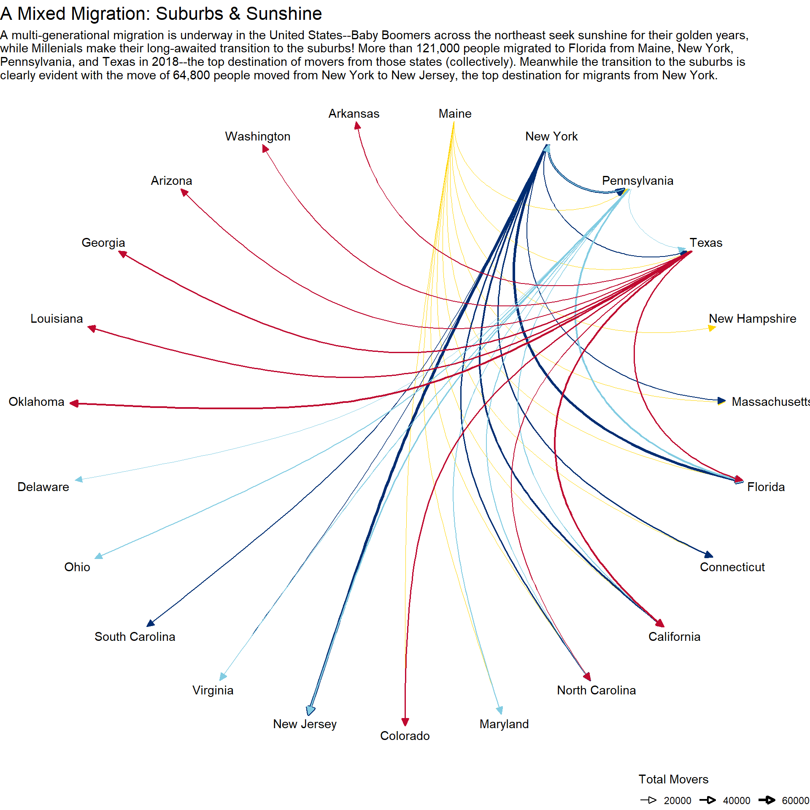

## load required libraries and set global conditions
library(tidyverse)
library(janitor)
library(tidygraph)
library(ggraph)DF <- readxl::read_excel("data/State_to_State_Migrations_Table_2018.xls",
skip = 5)## set the name of the first cell to be 'Target', needed for the row realignment
DF[1, 1] = 'Target'
## clean the dataset
cleanDF <- DF %>%
## move the first row to column name
row_to_names(row_number = 1) %>%
## create distinct names
clean_names() %>%
## remove columns that start with 'na' or are not a US State
select(-starts_with('na')) %>%
select(-c(total, total_2, puerto_rico, u_s_island_area, foreign_country)) %>%
## drop records w/ NA values (note: this does not include 'N/A' values which are valid)
drop_na(target, alabama) %>%
## remove the US and Puerto Rico from the target column
filter(target != 'United States2' & target != 'Puerto Rico') %>%
## transpose the tibble, rename the columns, and convert back to a tibble
t() %>%
row_to_names(row_number = 1) %>%
as_tibble(rownames = NA) %>%
clean_names()
## extract the row names
rows <- rownames(cleanDF)
## convert all columns to numeric
cleanDF <- cleanDF %>% mutate_all(as.numeric)
## add a new column for the 'source' state--previously rownames
cleanDF$source <- rows
## transform data to 'long' form
cleanDF <- cleanDF %>%
## move source column to first position
select(source, everything()) %>%
## select only the four states of interest
filter(source %in% c('new_york', 'texas', 'maine', 'pennsylvania')) %>%
## pivot the data longer on the source column
pivot_longer(!source, names_to = 'target', values_to = 'count') %>%
## select the top 10 migration destinations by source column
group_by(source) %>%
slice_max(n = 10, order_by = count) %>%
## clean the titles
mutate(source = stringr::str_to_title(gsub('_', ' ', source))) %>%
mutate(target = stringr::str_to_title(gsub('_', ' ', target)))
## see the final, cleaned dataframe
head(cleanDF, 15)## # A tibble: 15 x 3
## # Groups: source [2]
## source target count
## <chr> <chr> <dbl>
## 1 Maine New Hampshire 4016
## 2 Maine Massachusetts 3188
## 3 Maine Florida 2783
## 4 Maine Connecticut 1342
## 5 Maine California 1294
## 6 Maine North Carolina 1235
## 7 Maine Maryland 990
## 8 Maine Pennsylvania 916
## 9 Maine Colorado 912
## 10 Maine Texas 815
## 11 New York New Jersey 64810
## 12 New York Florida 63033
## 13 New York Pennsylvania 43048
## 14 New York California 34848
## 15 New York Connecticut 27361## create a duplicate of the source column for proper coloring later
cleanDF$lineColor <- cleanDF$source
## create the graph
graph <- as_tbl_graph(cleanDF)
graph## # A tbl_graph: 23 nodes and 40 edges
## #
## # A directed simple graph with 1 component
## #
## # Node Data: 23 x 1 (active)
## name
## <chr>
## 1 Maine
## 2 New York
## 3 Pennsylvania
## 4 Texas
## 5 New Hampshire
## 6 Massachusetts
## # ... with 17 more rows
## #
## # Edge Data: 40 x 4
## from to count lineColor
## <int> <int> <dbl> <chr>
## 1 1 5 4016 Maine
## 2 1 6 3188 Maine
## 3 1 7 2783 Maine
## # ... with 37 more rows## create the base plot
ggraph(graph, layout = 'linear', circular = TRUE) +
## add arced edges with line color being the source state, width being the total
## movers along that edge, and arrows for direction
## Note: label_rect keeps arrows/text from overlapping
geom_edge_arc(aes(color = lineColor, width = count,
start_cap = label_rect(node1.name),
end_cap = label_rect(node2.name)),
arrow = arrow(angle = 25, length = unit(2.5, 'mm'),
type = 'closed'), show.legend = TRUE) +
## rescale the edge width so differences can be observed
scale_edge_width(range = c(.2, 1.25), name = 'Total Movers',
guide = guide_legend(direction = 'horizontal',
title.position = 'top')) +
## recolor the edges based on state flag colors (loosely)
scale_edge_color_manual(values = c("#FFD500", "#002D72", "#82CCE2", "#BF0A30"), guide = FALSE) +
## add the text as the nodes
geom_node_text(aes(label = name)) +
theme_void() +
theme(legend.position = 'bottom', legend.justification = 'right',
plot.title = element_text(size = 16)) +
labs(title = 'A Mixed Migration: Suburbs & Sunshine',
subtitle = 'A multi-generational migration is underway in the United States--Baby Boomers across the northeast seek sunshine for their golden years,
while Millenials make their long-awaited transition to the suburbs! More than 121,000 people migrated to Florida from Maine, New York,
Pennsylvania, and Texas in 2018--the top destination of movers from those states (collectively). Meanwhile the transition to the suburbs is
clearly evident with the move of 64,800 people moved from New York to New Jersey, the top destination for migrants from New York.')